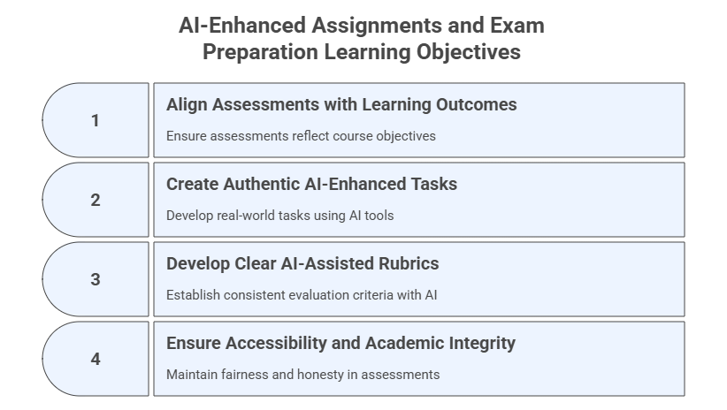

4. AI-Enhanced Assignments and Exam Preparation#
AI-assisted assessment strategies that align with learning goals while promoting authenticity, clarity, and integrity
This phase involves designing AI-assisted assessment strategies that align with learning goals while promoting authenticity, clarity, and integrity. Key tasks include designing formative and summative assessments, creating authentic tasks like case studies or AI-assisted projects, developing clear rubrics to define performance expectations, and ensuring accessibility and academic integrity. AI can assist in differentiating assessment types, designing real-world tasks, and drafting rubrics.
Learning Objectives#
After completing this module, participants will be able to:
Design formative and summative assessments aligned with course learning outcomes.
Create authentic, real‑world AI‑enhanced tasks such as quizzes, exams, case studies, and projects.
Develop clear, consistent, AI‑assisted rubrics.
Ensure accessibility and academic integrity in all AI‑supported assessments.

4.1 Design Formative and Summative Assessments Aligned with Learning Outcomes#
Purpose#
Use GenAI to understand and design assessments that track learning progress (formative) and evaluate mastery (summative), ensuring alignment with the course learning outcomes.
Prompt — Instructional
Explain the difference between formative and summative assessments in the context of learning.
Provide technical or scientific references from the literature about these two types of assessments.
Then generate an example of each for a course on [Course Title/Topic].
Course-Tailored Prompt — Instructional
Based on the learning outcomes presented below, suggest one formative and one summative assessment aligned with them.
[Learning Outcomes]
Note 1: You can use the same or a similar prompt for each learning outcome.
Note 2: If you know the type of assignment you want to create, you can prompt the model to create exactly that type of assignment.
4.2 Create Authentic Tasks (Quizzes, Exams, Case Studies, Projects, Multimodal Assignments)#
Purpose#
Design authentic assessments—textual, computational, creative, and multimodal—that mirror real-world professional tasks while leveraging GenAI tools to improve relevance, engagement, and depth of learning.
Prompt Template — Role‑Based + Instructional
You are an instructional designer creating a real-world, authentic task for a course on [Course Title/Topic].
Create an assignment where the students must use generative AI whilst still acquiring the required knowledge,
skills and critical thinking associated with the topic.
Include a rationale for how AI enhances learning.
Prompt Template — Role‑Based + Instructional (Multimodal Version)
You are an instructional designer creating an authentic, multimodal assignment for a course on [Course Title/Topic].
Design an assignment where students must:
1) Use generative AI to produce one multimodal artifact (image, diagram, video script, podcast outline, dashboard mockup, etc.),
2) Demonstrate mastery of the course content through written or oral analysis, and
3) Reflect on how AI supports, rather than replaces, their learning process.
Include:
- task description
- deliverables (text + multimodal component)
- required tools
- learning outcomes addressed
- rationale for pedagogical value
Additional Prompt Variant — Zero‑Shot
Give three examples of authentic, real-world assignments for a course on [Course Title/Topic].
Include one quiz with 5 questions, one AI-supported case study, and one project-based task.
Provide correct answers.
Additional Prompt Variant — Zero‑Shot (Multimodal Version)
Provide four examples of multimodal, real-world assignments for a course on [Course Title/Topic]:
1) A quiz that includes an image or diagram generated by AI.
2) A case study that requires interpreting text AND an AI-generated visual.
3) A project where students build a multimodal artifact (e.g., diagram, podcast, explainer video) with AI tools.
4) A simulation-based task where students respond to an AI-generated scenario.
For each, include correct answers or evaluation notes.
Multimodal Assignment Prompt — Simulation-Based Task
Create a scenario-based assignment modeled after real-world practice on [Course Title/Topic].
Use generative AI to produce a visual, chart, or infographic that students must analyze.
Task requirements:
- Provide the image prompt needed to generate the visual.
- Provide the scenario and guiding questions.
- Explain the expected student responses.
Multimodal Assignment Prompt — Diagram or Concept Map
Generate an assignment requiring students to create a concept map or diagram using an AI visual tool (e.g., Napkin, Figma AI, Canva Magic Design).
Include:
- the concept to map
- constraints (e.g., number of nodes, relationships)
- a follow-up written explanation students must complete
Multimodal Assignment Prompt — Audio/Podcast
Create an assignment requiring students to generate a short AI-assisted podcast episode explaining a key course concept.
Include:
- audio script requirements
- mandatory references to course readings
- reflection questions about AI's role in preparing the episode
Multimodal Assignment Prompt — Video Explainer
Design an assignment in which students produce a 2–3 minute AI-assisted explainer video on a selected topic.
Students must script the video with GenAI, validate the content manually, and cite their AI prompts.
Include:
- video structure
- accuracy and integrity expectations
Multimodal Assignment Prompt — Data + Image + Text Integration
Create an assignment where students must analyze a dataset, interpret AI-generated visualizations, and write a short analytical report.
Include:
- dataset description
- visualization prompt
- expected reasoning steps
Sample Tools to Support Multimodal Assignments#
Category |
Tools |
|---|---|
Diagrams |
Canva Magic Studio, Napkin, Figma AI, DALL·E |
Images |
Midjourney, DALL-E, Stable Diffusion, Adobe Firefly, Leonardo.ai, Ideogram, Flux |
Video |
Runway ML, Pika Labs, Synthesia, HeyGen, Veed.io, Luma Dream Machine |
Audio/Podcasts |
NotebookLM, ElevenLabs, Murf.ai, Play.ht, Resemble AI, Speechify, Wondercraft, Copilot |
Dashboards/Data |
ChatGPT Code Interpreter, Gemini Advanced + Sheets, Observable, Julius AI, DataChat AI |
Note: Some foundational models and general-purpose LLMs contain features and tools that allow you to create specific types of assignments, such as Artifacts -> Quiz in Claude.ai and Quiz in NotebookLM. There are also AI tools designed exclusively to support teaching and learning activities, such as Eduaide (eduaide.ai) and Khanmigo (khanmigo.ai), that can support the development of assignments.
4.3 Create Rubrics with GenAI#
Purpose#
Develop clear, consistent rubrics using structured prompting, ensuring transparency and alignment with learning outcomes.
Prompt Template — Instructional
Create a rubric for the following assignment:
[Paste the assignment here or upload it in the prompt]
Use the following criteria:
[Criterion 1, Criterion 2, ..., Criterion N]
Create a 1–5 Likert scale and ensure the total points equal 10.
Additional Prompt Variant — Role-Based + Chain-of-Thought
You are an assessment specialist on [Course Name/Topic]. Create a detailed analytic rubric for the assignment below.
Include 4 criteria, each with 4 performance levels, and point values that total 100 points.
[Paste assignment description here]
Explain your reasoning step-by-step as you generate a rubric for this assignment.
Identify the core skills being assessed, justify each criterion, and then produce the final rubric table.
Rubric Audit Prompt
Audit the rubric below for clarity, comprehensiveness, redundancy, and misalignment with the assignment.
Suggest revisions and then provide an improved version.
[Paste rubric]
Rubric Difficulty Leveling Prompt
Generate three rubric versions for the same assignment:
- Introductory level
- Intermediate level
- Advanced level
Each version should reflect increasing expectations in cognitive demand.
Rubric for Multimodal Deliverables
Create a rubric for an assignment where students submit two deliverables:
1) A written report
2) An AI-generated multimodal asset (e.g., image, podcast script, or diagram)
The rubric should evaluate both independently and their integration.
Rubric for Partial AI Use Transparency
Create a rubric that includes a specific criterion assessing transparency in how students used AI during the assignment (e.g., listing prompts, describing AI contributions).
4.4 Ensure Accessibility and Academic Integrity#
Purpose#
Ensure equitable access for all learners and minimize misuse of generative tools.
Prompt Template — Role‑Based (Accessibility)
You are an educator designing an inclusive assignment using GenAI.
List principles that ensure accessibility for neurodiverse, multilingual, or disabled learners.
Include examples of modifications.
Additional Prompt Variant — Instructional (Integrity)
Suggest five ways to promote academic integrity in AI-assisted assignments.
For each, include a strategy to monitor or mitigate misuse.
4.5 Updates to Your AI Workspace and Personalized Assistant#
This section summarizes how to update both your AI Workspace (Project) and your Course Personalized Assistant (PA) after completing Module 4 on AI-Enhanced Assignments and Exams. These updates ensure that assessment-related materials, rubrics, prompts, and policies are incorporated into your tools in a consistent and responsible way.
A. Updates to Your AI Workspace (Project)#
Your Workspace continues to act as the design environment where assessments, rubrics, exam versions, and task banks are created, audited, and refined.
1. Upload New Files to the Workspace Knowledge Base#
Add any assessment-related materials created in this module:
Draft quizzes and exam questions
Case studies and real-world tasks
Rubrics and criterion descriptors
Multimodal assignment instructions and artifacts
Accessibility and integrity checklists
Variants of item banks, simulations, or projects
2. Update Workspace Instructions#
Add under Capabilities:
- Generate formative and summative assessments aligned with learning outcomes
- Create rubric versions (analytic, holistic, multimodal)
- Produce quiz banks, question variants, and difficulty-leveled items
- Audit assignments for accessibility, clarity, and academic integrity
- Suggest multimodal formats for quizzes, cases, and projects
Add under Behaviors:
- Ensure alignment between assessments, learning outcomes, and module goals
- Flag ambiguous, biased, or vague assessment items
- Verify that all generated assignments support responsible AI use
- Recommend alternative versions for accessibility or accommodation
B. Updates to Your Course Personalized Assistant (PA)#
Your PA acts as a student support tool, not a design tool. After Module 4, update the PA to better assist students with understanding assignments, without compromising academic integrity.
1. Upload New Files to the PA Knowledge Base#
Add:
Assignment descriptions
Rubrics (student-friendly versions only)
Examples of acceptable vs. unacceptable AI use (based on policies)
Accessibility-friendly assignment formats
Note: Do not upload answer keys or instructor-only materials.
2. Update PA Instructions#
Add under Capabilities:
- Clarify assignment instructions in simple, intermediate, and advanced terms
- Provide practice questions or self-check quizzes based on assignment themes
- Explain rubric criteria and expectations without revealing solutions
Add under Behaviors:
- Redirect students to the syllabus or instructor for policy questions beyond scope
- Provide step-by-step guidance for understanding criteria and tasks
- Offer study strategies related to the assignment topics
Add under Safety & Boundaries:
- Never generate solutions to graded assignments, quizzes, or exams
- When asked for a direct answer, reply:
“I can help explain the concept, but I cannot complete graded assignments.”
- Avoid generating prompts or multimodal artifacts that would complete the student’s graded work
Note: Continue following the workflow recommendations in Section 2.7C:
All course design prompts go to the Workspace, preferably clustered by subject
All student questions go to the PA
Update both tools incrementally as new materials are created
4.6 Exercises#
Exercise 1 — Generate Assessment Types#
Use your Workspace to generate:
2 formative assessments
2 summative assessments
A mapping table aligning each to learning outcomes
Exercise 2 — Create an AI‑Enhanced Case Study#
Upload a reading or dataset into your Workspace and prompt:
Generate a case study with guiding questions based on this material.
Exercise 3 — Build a Full Rubric#
Use the Likert-based rubric prompt and refine it with:
Audit this rubric for clarity, redundancy, and alignment with learning outcomes.
Exercise 4 — Accessibility & Integrity Review#
Ask:
Review this assignment for accessibility and integrity issues.
Provide revisions and a checklist.
4.7 Reflection#
Did AI help improve clarity or depth of assessment design?
Which tasks still require human oversight?
How will you integrate these workflows into your course assignments?